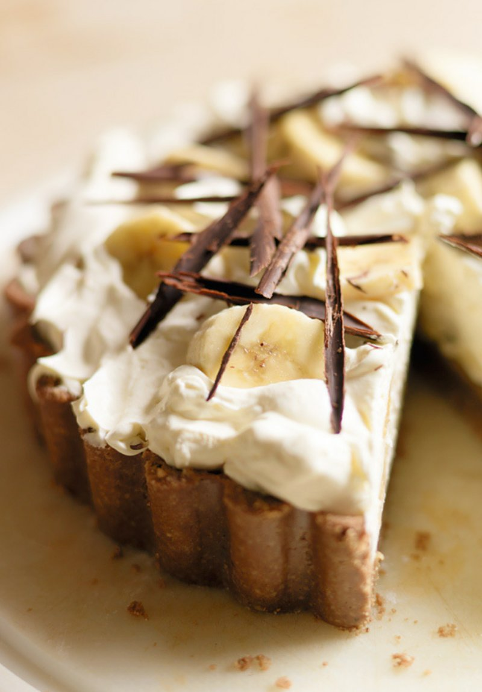

Banoffee Pie

A Delight to the Tastebuds
When it comes to banoffee pie you just have to forget the calorie counting – bananas, cream, chocolate, what's not to like? Use a deep tin so there's plenty of room for the filling.
Ingredients
Toffee Filling
- 115g butter
- 115g soft dark brown sugar
- 397g can sweetened condensed milk
For the topping
- You'll need 23cm loose-based tart tin – must be about 4cm deep to contain the filling
- 5 ripe but firm medium bananas
- 450ml double cream
- 1 tsp fresh lemon juice
- 25g plain dark chocolate, coarsely grated, or chocolate curls
Biscuit Base
- 75g butter
- 300g chocolate oaty biscuits, such as Hobnobs
Steps
- To make the base, melt the butter in a small saucepan. Break the biscuits into chunky pieces and put in a food processor. Blend into crumbs, then add the melted butter and, with the motor running, blend well. Alternatively, put the biscuits in a strong polythene food bag and bash with a rolling pin. Tip into a bowl and stir in the melted butter.
- Tip the crumbs into the centre of a deep, 23cm/9in fluted loose-based tart tin or quiche dish and press firmly into the base and sides. Make sure it is evenly distributed, especially where the base meets the sides. Cover and chill in the fridge for 30 minutes, or until set.
- To make the filling, melt the butter in a medium saucepan, then stir in the sugar. Cook over a low heat, stirring constantly, until the butter and sugar look smooth and no oil floats to the surface. Add the condensed milk and bring to a gentle simmer, stirring constantly. Cook for 3 minutes, stirring, until the mixture turns a deep, creamy caramel brown.
- Pour the toffee gently onto the biscuit base and quickly smooth the surface. Leave to chill for 1 hour (or up to 8 hours).
- Just before serving, lightly whip the cream in a bowl. It should stand in soft peaks, any thicker and it will look over-whipped when mixed with the bananas. Peel and diagonally slice four bananas and scatter half of them over the toffee. Fold the rest lightly into the cream and spoon gently on top.
- Peel and slice the remaining banana and put it in a bowl. Pour the lemon juice over and gently toss (this will stop the banana turning brown). Decorate the top with the lemony banana, poking into the cream randomly, and sprinkle the pie with grated chocolate or decorate with chocolate curls. Serve in fairly thin slices as it is very rich.